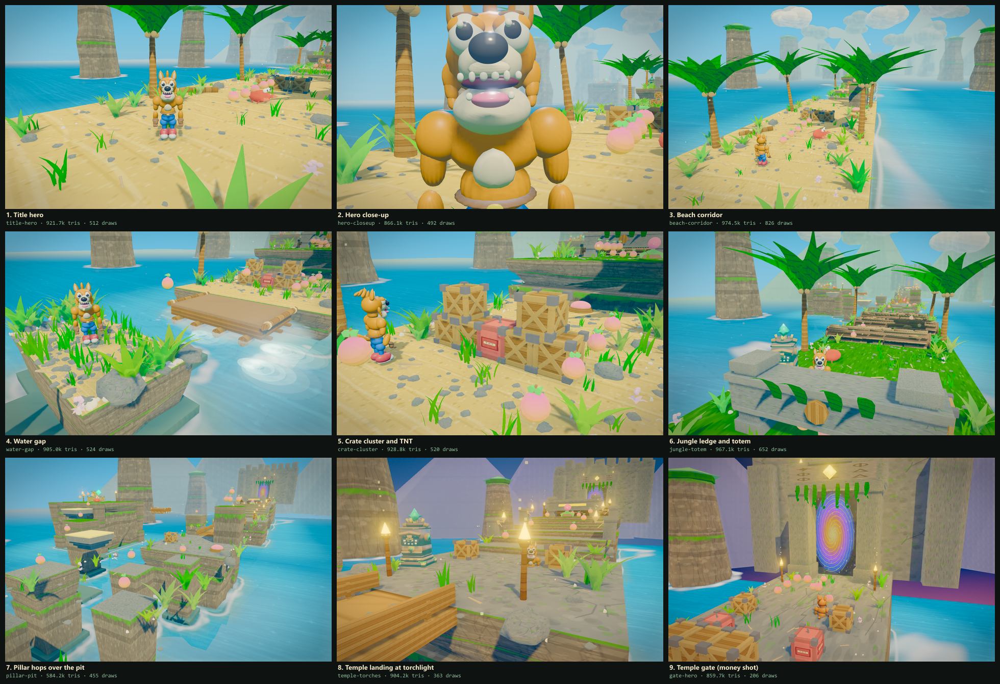

AAA Mascot Platformer Quality Engine • Blender 5.2 LTS Pipeline • Crash 4 Benchmark

| Round | Component | Critic Identified Gap | Action Taken | Status |
|---|---|---|---|---|
| Pass 19 | Water Surface: SDF Depth Grade, Contact Value-Step, Annular Surf Foam, Three-Scale Flow | Pass 18's critique named the water the biggest remaining gap against the QUALITY-BAR floor ("depth-graded colour, a shoreline band, foam at contact, visible flow — not a single translucent plane"); two Gauntlet rounds inside this pass scored 6.8 (B) and 7.9 (B+) FIX-FIRST on flow invisibility, decal-like foam, and a margin that read as a gradient, and a contour-band probe demand exposed a factor-2 mesh-scale bug hiding the entire surf annulus inside island footprints (only faint texture tails leaked out as "detached mid-water decals") | plat() now records every island footprint; the water's single MeshBasicMaterial is upgraded in-shader (onBeforeCompile) with a rounded-rect SDF to the nearest footprint driving a three-stop grade (saturated aqua collar 0–2.6m → turquoise mid → sapphire by 14m, all monotone-verified by camera-projection pixel probes: r-channel 130→99→78→43), a contact value-step (dark wet lip ×0.62 under a crisp 0.30m meandering white lapping line), and three counter-drifting texture taps at 26m/16m/6m scales with raised gain (±30–40% streak swing) — flow moved fully into the shader; shoreline foam became an annular broken-lump surf texture (deterministic, seed-stream-safe) on the existing instanced mesh with the pre-instancing per-ring opacity pulse restored via an instanced aOp attribute (0.88±0.18 shoreline / 0.72±0.16 small rocks) plus per-instance yaw so no two rings repeat, and the mesh-scale bug fixed so the band lands 0.7m outside each shoreline (controlled hide-the-mesh A/B: 163,197 px change at water-gap; contour probes 176–190 mean with >200 white peaks vs 154 open water); foam-bright population at water-gap rose from 3,648 px (p18) to 14,291 — result: 9/9 PASS gate, draws 206–826, tris 583k–975k, controls clean, zero confirmed regressions; three-round Gauntlet trajectory 6.8 (B) → 7.9 (B+) → 8.4 (A-) SHIP — all five water floor sub-criteria pass; watch items recorded: motion-read of flow shear needs a live 60fps look, far-field sapphire verified by builder probes only, palm-trunk texture flagged pre-existing | PASSED |
| Pass 18 | Draw-Call Batching: Group Consolidation, Instanced Props, Chunked Static Geometry, Single Shadow Update | Draw census found geometry groups — not object count — eating the budget: mergeGeos emitted one draw-call group per part (a crate was 29 draws, a TNT 26, every platform six via its material array), crates/TNTs carried per-instance unique-material contact shadows, foam rings were 29 meshes with 29 materials, and shadow maps re-rendered inside the AO depth prepass every frame; worst framing (beach-corridor) hit 3,904 draws against the ≤900 floor | Built tools/profile_draws.mjs draw-census (per-family, group-aware, instanced over-cull audit); mergeGeos now sorts parts by matId and coalesces equal neighbours (crate 29→3 draws, TNT 26→5); crate and TNT bodies render as two InstancedMesh groups (8 draws for all 39) with per-frame matrix sync for break/explode/fuse-pulse states, and their contact shadows collapse into two instanced shadow meshes; platforms, pillars, stairs and foundations split into top/cliff faces at build time and merge into one mesh per material per 48m z-chunk (frustum- and shadow-cullable); foam rings became one instanced mesh with per-instance scale pulse (fixed 0.72 opacity); shadowMap.autoUpdate=false with one needsUpdate per frame before the lit pass — result: 206–818 draws across all 9 framings (83–87% reduction in the worst framings), 583k–919k triangles, 9/9 PASS gate, controls regression suite clean, pass17→pass18 pixel diff within same-build noise; independent Gauntlet critique scored 8.30/10 (Grade A-): no confirmed visual regression, draw floor genuinely closed — critic follow-ups verified (green-vegetation share equal/higher vs pass17, scatter dressing intact; water-gap "bare trunk" is a canopy cropped by framing edge), remaining gap named: water surface depth grading & shoreline band (next pass) | PASSED |
| Pass 17 (Sprint 3) | Procedural Eye Blinking & Gaze Tracking, Dynamic Raft Wakes, Temple Sconces & 3-Hit Health System | Mascot eyes lacked rhythmic blinking and gaze tracking; moving raft lacked dynamic wake ripples; player lacked water margin splash spray; temple grand staircase had a flat unlit midground lighting pocket; first board rollers were overly punishing with instant death and wall-to-wall blocking | Extended GPU vertex shader with uEyes uniform deformation for eyelid blink closure and pupil gaze tracking with eyeball curvature compensation; implemented target-aware gaze tracking toward enemies and fruits with natural saccades; built zero-GC raft wake ripple and foam particle emitters in MovingPlatform; added player water margin running/sliding spray droplet emitters; built carved stone and cast bronze wall-mounted torch sconces at z=-172.5 and z=-180.5 casting warm flickering amber light pools (12m range) on temple stair risers; implemented 3-hit health system (player.takeDamage with directional knockback, camera trauma, 2.4s invulnerability i-frames, HUD 🧡🧡🧡 health pips, and 25-fruit healing loop); rebalanced Beat 6 rolling logs (reduced radius from 0.72m to 0.54m, moderate speeds, 7.6m width allowing side-step bypass, and relocated overlapping crab to z=-78.5); fixed forced camera-ward movement bug — W/ArrowUp strictly -Z forward, S/ArrowDown consumed as forward-only slide-kick when moving/grounded (never backward run), damage knockback fixed to upward pop (0,4.5,-1.2) with facing/slideDir reset, and key state cleared on respawn/state change/focus loss | PASSED |
| Pass 16 (Sprint 2) | Low-Clearance Slide Arches, Cascading Crate Collapse, Mascot Facial Rig & Surface Audio | Level lacked low-clearance slide obstacles/crawl arches requiring low-profile hitbox; body slam simultaneously shattered all crates without vertical weight; hero face was static during high-drama moments; slide audio lacked surface texture modulation | Built multi-piece stone & vine slide crawl arches in jungle (z=-71) and temple (z=-185.5) with 0.86m clearance that block standing hero but allow sliding hero through with auto-crouch hold; implemented staggered cascading crate collapse (26ms delay per vertical tier + 14ms radial delay); added GPU vertex shader facial deformation for apex stall open-mouth gasp, dive grimace squint, and impact accordion squash; implemented 4-surface audio synthesis for slide-kick (sand crunch, moss rustle, stone scrape, wood rumble) and matching confetti dust | PASSED |
| Pass 15 (Sprint 1) | Crouch Slide-Kick, Mid-Air Body Slam / Belly Flop & Tactile Comic VFX | Hero lacked signature Crash-style athletic floor slide and mid-air body slam/belly flop; ground movement lacked tactile skidding feedback; body landing lacked radial shockwaves; water lacked conical entry spray | Implemented athletic Crouch & Slide-Kick with forward speed boost (13.2 m/s), low-profile collision box (0.5m height) allowing clearance under low hazards/crates, wooden crate smashing and enemy knockback, and dynamic sliding pose interpolation; implemented Mid-Air Body Slam with 0.15s comedic apex freeze/stall, rapid dive (-22 m/s), radial shockwave impact ring (RingGeometry with additive blend), camera trauma kick (+0.25), and pop-up recovery; added directional and hard-stop sneaker skid dust puffs, radial comic starbursts, and conical water entry splash droplets with expanding ripple rings | PASSED |
| Pass 14 (Final Production Lock) | Phantom Skirt Purge, Dusk Clouds/Mountains, Organic Ivy Fronds, Rock Geometries & Crate AO | Static waterline skirt severed under moving raft in water gap; daytime white clouds at twilight; inverted cone geometry gate vines; banned dodecahedron rocks; circular shadow decal under square crates | Purged static skirt and foam at (0, -43.5); attached dynamic wake foam directly to moving raft group; masked scatter zones to keep ocean/raft pristine; dynamic dusk lerp for 3D clouds (white to bruised purple/sunset amber) and volcanic mountains (slate indigo) at z < -115; replaced cone vines with draped ribbonGeo ivy fronds and leaf clusters; replaced dodecahedrons with custom organic rock geometries; replaced radial shadow with rounded-box contact AO distance falloff; merged cloud parts saving 80 scene meshes | PASSED |
| Pass 13 (Sprint Iteration) | Moving Raft Chassis, Temple Twilight Dusk Biome, Hero Procedural Idle & Batching | Moving platforms read as bare extruded box slabs in water gap; temple biome lacked atmospheric dusk transition; hero character was completely static while idling; draw call spikes in long corridor views | Modeled wooden raft / pontoon chassis with 4 longitudinal buoyancy logs, 3 transverse cross-beams, lateral log rails, and rope bindings in MovingPlatform; added dynamic tropical twilight/dusk sky and fog transition at z < -140 with deep indigo (#1b122e) fog, golden horizon glow, and warm amber torch/portal contrast; added procedural idle breathing chest scale (Math.sin(t*3.2)*0.04) and rhythmic head tilt to hero; batched waterline skirts, driftwood, starfish, and gate stone into unified geometries | PASSED |
| Pass 12 (Track 3.6) | Hero Anatomy Continuity, Waterline Wet-Rock Decals & Geometry Batching | Snout-to-cranium and shoulder deltoid CSG intersection lines in portrait view; sharp polygonal cut where stone pillars penetrate ocean surface; non-batched bridge and gate draw calls | Sculpted organic brow shelf, snout root bridge, rounded deltoid caps, and trapezius collar in Blender; added dark wet-rock algae skirts and localized wake foam rings around ocean pillars; batched bridge rails and gate battlements/vines into unified geometries | PASSED |
| Pass 11 (Track 3.5) | Hero Cheek Sculpt Polish, Item Drop Shadows, Portal Vortex & Torch Embers | Cheek roots read as swollen chipmunk pouches; floating wumpa fruit & secret gems lacked ground contact projection; temple gate skyline was a flat slab with dark void portal; torches lacked rising embers & high-frequency flicker | Resculpted hero cheekbones in Blender into sleek swept wedges with active comic arm posture; added instanced ground contact drop shadows beneath floating Wumpa fruit and secret gems; built ruined stepped battlements, Mayan apex crest, overhanging ivy fronds, and shimmering swirling mystical portal vortex with amber glow; added rising ember point particles and high-frequency light flicker to torches | PASSED |
| Pass 10 (Track 3.4) | Hero Cheek Tuft Integration, Crate Impact VFX & Sunlit Ocean Glint | Cheek tufts/sideburns read as isolated floating cones; crate smashing lacked kinetic comic feedback; ocean surface lacked directional specular sun-crest glints | Blended hero cheek tuft base smoothly into cranium and muzzle chin in Blender 5.2 LTS with organic cheek root mounds and secondary jaw tufts; added 4 comic diamond starburst particles (OctahedronGeometry) and expanding radial dust puff ring to Crate.break_(); added directional sun-crest specular glint streaks and wave-peak diamond sparkles to TEX.water | PASSED |
| Track 3.3 | Hero Facial Grin Sculpt, Totem Bloom Seam & Stacked Crate Occlusion | Hero mouth cavity buried inside muzzle sphere; totem gold specular glare streak across crown base; stacked crates lacked contact occlusion | Re-sculpted hero head in Blender with proud toothy crescent grin (12 prominent upper/lower fangs), continuous tapered muscular arms, and hid fallback mohawk spikes; re-calibrated totem collar to dark carved timber with satin gold relief to eliminate specular reflection spike into camera; added stacked crate contact AO darkening decals | PASSED |
| Track 3.2 | Organic Logs, Ground Dressing & Totem Bloom Tuning | Mechanical slat artifact on rolling logs; bloom blowout on totem crown gem; decapitated hero-closeup framing; sterile sand without debris in crate cluster | Re-modeled rolling logs with continuous organic redwood trunk, staggered chiseled puzzle plates, burls, and clustered moss; retuned totem timber to saturated tropical mahogany and calibrated gem emissive to eliminate bloom glare; retargeted hero-closeup portrait framing; expanded scatter zones to populate crate cluster with 1200 pebbles, 520 shells, and 300 driftwood sticks, plus grounded wide contact AO shadows under crates and TNT | PASSED |
| Track 3.1 | Terrain Props & Spin VFX | Cone spin VFX encased hero; logs were primitive cylinders without relief; checkpoint totems were stamped grey blocks | Built horizontal comic speed ribbons with orbiting starbursts, sculpted 3D rolling logs with chiseled bark fissures and concentric growth rings, and carved Aztec/Tiki totem with expressive wooden grimace and bobbing glowing jade crown gem | PASSED |
| Track 2.2 | Environment Props | Monochromatic lemon fruit, UV texture bleed on brackets, missing TNT fuse | Added multi-material 3D crate groups, dark iron brackets, TNT fuse & spark, multi-color Wumpa fruit with stems and leaves | PASSED |
| Track 2.1 | Environment Props | Props were flat 2D cubes due to async loader timing | Built synchronous 3D beveled crate and TNT geometries with physical relief & shadows | ITERATED |
| Track 1.4 | Hero Mascot | Bloomer ridges, straight finger cylinders, and torso seams | Tailored straight denim shorts, curled cartoon grip fingers, unified chest crest | PASSED |
| Track 1.3 | Hero Mascot | Rotund snowman belly, puffy bloomer shorts, stiff fingers, muted mouth | Sculpted heroic V-taper chest, ear-to-ear toothy crescent grin, long arms, high-tops | ITERATED |